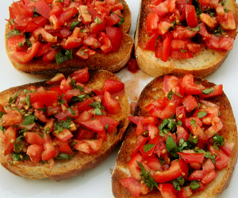

Bruschetta
4,5 von 64 beste Tomaten in kleine Würfel schneiden. Bestes Olivenöl sowie einige fein geschnittene Basilikumblätter dazu geben. Mit Salz und Pfeffer würzen. Ciabatta-Brot in Scheiben schneiden und gut Toasten. Die Scheiben mit einer Knoblauchzehe einreiben, die Tomatenmasse darüber verteilen und sofort servieren. Dazu Ruccola-Salat
